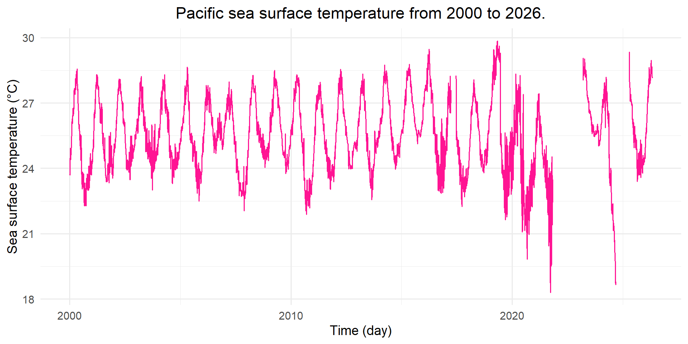
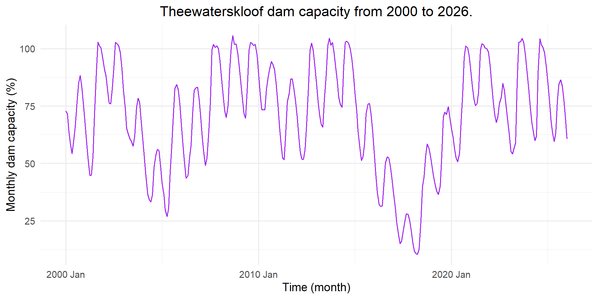
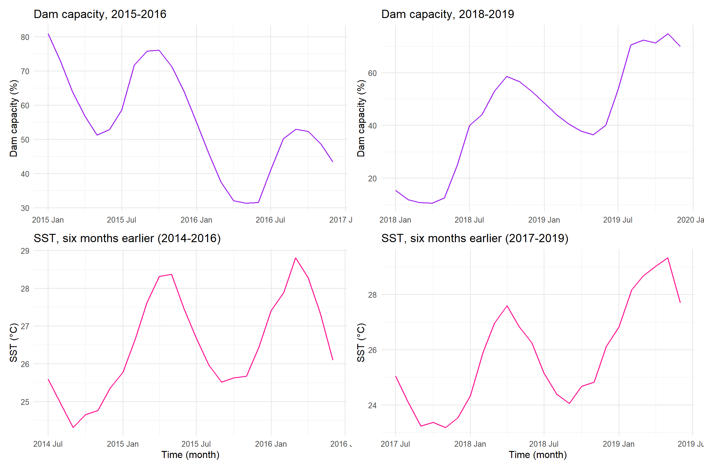
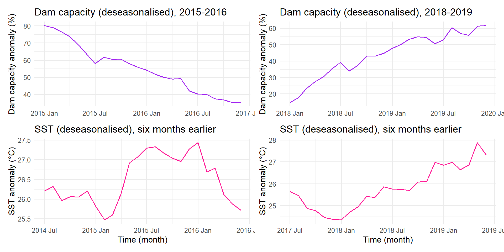
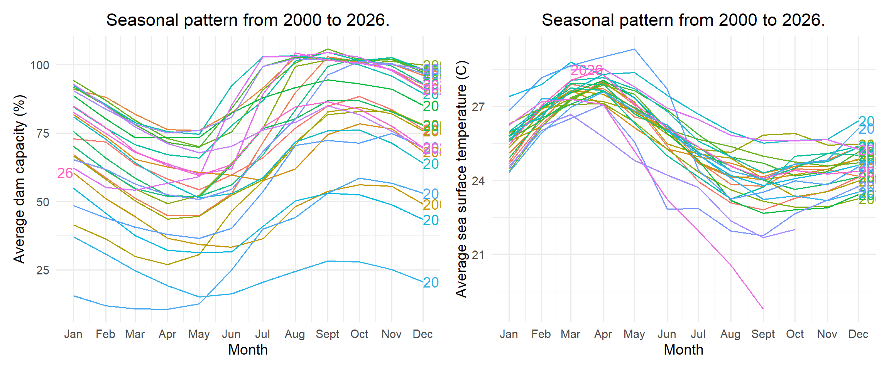
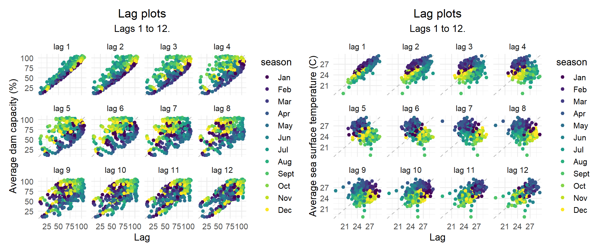
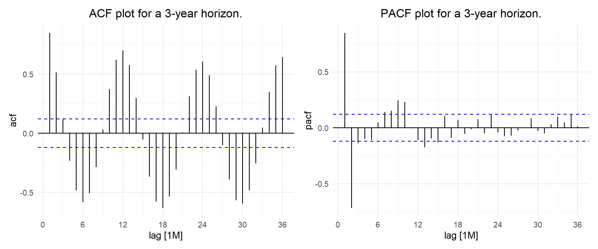
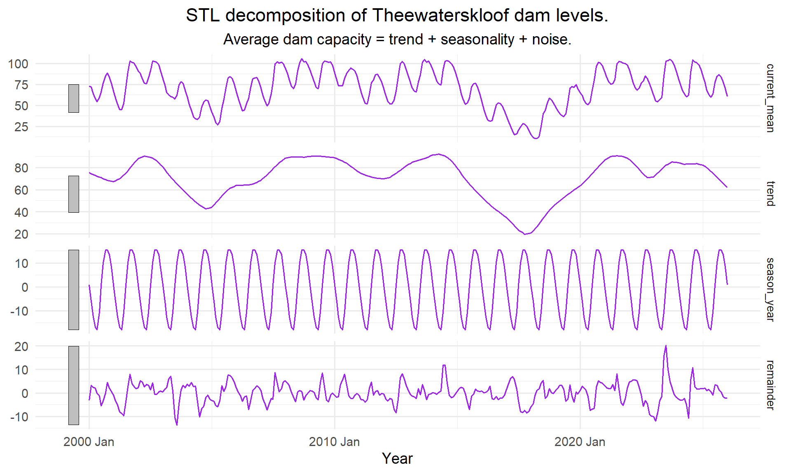
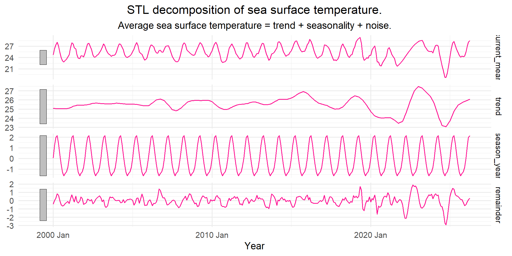
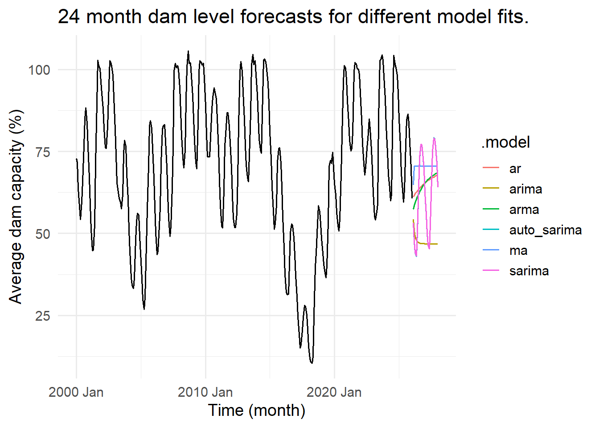

# A tibble: 1 × 1
n_missing
<int>
1 1The plan for this project is to fit all the autoregressive models to both datasets, compare them and forecast using the best models. I’m hoping to then use these same datasets in another projects to see if SST and historic dam levels can be used to predict drought in Southern Africa (I’m not 100% sure how I’m going to do this but I think it’ll be interesting)
Purely for interests sake, here is a website that maps the sea surface temperature anomlaies: https://earth.nullschool.net/#current/ocean/surface/currents/overlay=sea_surface_temp_anomaly/orthographic=-100.92,9.72,366/loc=-99.041,-1.152
SST along the equatorial band in the eastern and central Pacific is much higher than past temperatures. This is aligning with experts prediciting a super El Nino in 2026/2027.
- Section & Topic: Autoregressive Models
- Project Type: Model implementaion
- Question / Aim: Is sea surface temperature in the eastern Pacific Ocean and Theewaterskloof dam levels predictable?
- Data Used: [https://www.pmel.noaa.gov/tao/drupal/disdel/] [https://odp-cctegis.opendata.arcgis.com/] I will reference this properly!
- Methods Used: AR,MA,ARMA,ARIMA,SARIMA,SARIMAX (at least this is the plan)
Key Findings
[cite: 1]
Reflections
- What I would do differently next time:[cite: 1]
Links
- Detailed Analysis & Code Script[cite: 1]
Predicting drought in Southern Africa
The aim of this project is to predict Theewaterskloof dam levels as well changes in sea surface temperatures in the eastern Pacific Ocean (along 95W) and use this data to predict drought occurrence in Southern Africa.
The El Nino phase of the El Nino Southern Oscillation (ENSO) is characterise by anomalous warming of sea surface temperatures in the eastern and central Pacific Ocean. This phenomenon typically starts between March and June, reaching its peak in December. An El Nino event causes warm and dry conditions over Southern Africa, typically taking effect 3-6 months after the onset of El Nino, in the Pacific. Over the 2015-2016 season, the El Nino weather patterns resulted in prolonged drought in Southern Africa with dam levels dropping and severe water restrictions being implemented.
The South African Weather Service (SAWS) is warning against a super El nino event in 2026-2027, as current sea surface temperatures rise beyond the threshold used to define a very strong El Nino.
We are interested in the Theewaterskloof dam current levels as Theewaterskloof dam is the main supplier of water to Cape Town.
References:
[https://onlinelibrary.wiley.com/doi/abs/10.1002/env.476?casa_token=Eg_zhVj43usAAAAA%3Ar0WptInFBau9fa2gbi2g7VfKEkwccQlk-l0YIV8mbMZnQvBcHiz9Cc_yBXPmfHgftiHsExL1riAtWaHZKw]
[https://www.thelancet.com/journals/lancet/article/PIIS0140-6736(03)12421-X/fulltext]
[https://mg.co.za/the-green-guardian/2026-09-01-the-saws-warns-exceptionally-strong-2026-2027-el-nino-could-bring-severe-heatwaves-to-sa/]
Exploratory Data Analysis
The duplicate observation in the Dam_Levels_from_2000 dataset was removed by retaining only the first occurrence of each date, using distinct(DATE,.keep_all=TRUE). The dam level series contained only 1 missing value that was linearly interpolated.


As seen in both Figure 1 and Figure 2 there is noise in the daily observations. The daily data is aggregated to monthly averages to obtain a clearer visualisation of the seasonality present in the data and to smooth out high frequency noise.


As seen in Figure 3 and Figure 4, both datasets display strong 12-month seasonal patterns.
Both the Dam_Levels_from_2000 dataset and the sst dataset have observations from 2000 to 2026. The sea surface temperature series has a period of missing observations from November 2021 to March 2023 due to the buoy array not recording observations. This gap cannot be reliably smoothed over and thus has been left as missing.
As the forecast horizon grows, uncertainty in the predictions increases. Experts are predicting an exceptionally strong El Nino event in 2026/2027 and since both series extend to the present year it will be interesting to bee if the fitted models pick up the El Nino phenomenon as it develops.
Southern Africa experienced severe droughts in 2015/2016 and 2018/2019. Both of these periods saw significant El Nino conditions which supports the idea that eastern Pacific sea surface temperature can be used to predict Theewaterskloof dam levels.
Code
# #| label: fig_15161819
# #| fig-cap: "Theewaterskloof dam capacity fro 2015-2016 and 2018-2019."
# #| fig-width: 12
# #| fig-height: 5
# #| echo: false
# #| message: false
# #| warning: false
#
# damlvl_2015_2016 = damlvl_ts |>
# filter(DATE>=ymd('2015-01-01')&DATE<=ymd('2016-12-31'))
#
# damlvl_2018_2019 = damlvl_ts |>
# filter(DATE>=ymd('2018-01-01')&DATE<=ymd('2019-12-31'))
#
#
# # Plot:
# plot_20152016 = ggplot(data = damlvl_2015_2016,
# mapping = aes(x = DATE,
# y = THEEWATERSKLOOF_Current)) +
# geom_line(col = 'purple') +
# theme_minimal(base_size=14) +
# labs(title = 'Theewaterskloof dam capacity for 2015-2016.',
# x = 'Time (month)',
# y = 'Monthly dam capacity (%)')+
# theme(
# plot.title = element_text(hjust = 0.5)
# )
#
# # Plot:
# plot_20182019 = ggplot(data = damlvl_2018_2019,
# mapping = aes(x = DATE,
# y = THEEWATERSKLOOF_Current)) +
# geom_line(col = 'purple') +
# theme_minimal(base_size=14) +
# labs(title = 'Theewaterskloof dam capacity for 2018-2019.',
# x = 'Time (month)',
# y = 'Monthly dam capacity (%)')+
# theme(
# plot.title = element_text(hjust = 0.5)
# )
#
# plot_20152016 + plot_20182019


Sea surface temperatures and dam levels both show strong seasonal patterns. Dam levels dip around April/May and peak around August. Sea surface temperatures peak around February/March and drop around September/October.

It is worth noting that the structural gaps present in the sea surface temperature series result in some months having more observations than others.

Need to mention autocorrelation here.


Both Figure 9 and Figure 10 indicate that these time series are non-stationary. The ACF of the sea surface temperature illustrates a regular seasonal pattern with sharp peaks occurring at regular intervals compared to the ACF of dam levels which has a less stable seasonal pattern seen by the less regularly-spaced peaks. This suggests that the dam level pattern is influenced by a long-term irregular hydrological cycle as opposed to seasonal rainfall patterns. Both PACF plots have a large spike at lag 1. This is typical of a non-stationary process. The dam level series has some weaker spikes around lag 6-8 that indicate short-run structure but the sea surface temperature PACF is mostly within the bounds after lag 1. The order selection for the AR and SARIMA models is based on the ACF and PACF plots of the seasonally differenced series.


Figure 12 plots the decomposition of the sea surface temperature series. There are missing observations from November 2021 to March 2023 and October 2024 to March 2025. These observations have been interpolated not observed for completeness of the decomposition across the entire series and should not be interpreted as true measurements.
As seen in Figure 11 and Figure 12 both the dam level and sea surface temperature series show strong seasonal trends with Figure 11 showing multi-year drought and recovery cycles. There are noticeable dips in 2005 and 2018, as opposed to a stable long-run trend. The SST trend observed in the sea surface temperature series is more stable with a slightly smoother trend. This can be attributed to sea surface temperatures being driven by the annual warming and cooling due to heating angles whereas dam levels are driven not only by seasonal patterns by also by the long-term irregular hydrological cycle.
| Mean | Naive | Seasonal naive | Drift |
|---|---|---|---|
| 24.945 | 7.521 | 17.308 | 7.65 |
The naive model produces the smallest residuals when compared to the other benchmark models that were fit.
# A tibble: 1 × 1
nsdiffs
<int>
1 1# A tibble: 1 × 1
ndiffs
<int>
1 0# A tibble: 1 × 1
nsdiffs
<int>
1 1# A tibble: 1 × 1
ndiffs
<int>
1 0We only need to seasonally difference the Dam_Levels_from_2000 and sst datasets, no linear differencing is required.
Model fitting
This project fits and compares AR,MA,ARMA,ARIMA and SARIMA against the benchmark models: Mean, Naive, Seasonal naive and Drift, for both the Dam_Levels_from_2000 and sst datasets. A time series regression model is then fit on Dam_Levels_from_2000 using the sea surface temperature as a predictor to determine if sea surface temperature in the eastern Pacific can improve the prediciton of Theewaterskloof dam levels to aid in drought prediction.

@
Code
# Dam: full series available to 2026, hold out the last 2 years as test
dam_train = monthly_damlvl_ts |> filter_index(. ~ "2023 Dec")
dam_test = monthly_damlvl_ts |> filter_index("2024 Jan" ~ .)
# SST: use the clean pre-2021 segment (consistent with your unit-root/ACF work),
# hold out the last ~2 years of that clean stretch
sst_train = monthly_ts_pre2021 |> filter_index(. ~ "2019 Dec")
sst_test = monthly_ts_pre2021 |> filter_index("2020 Jan" ~ .)Code
dam_fit = dam_train |>
model(
mean = MEAN(current_mean),
naive = RW(current_mean),
snaive = SNAIVE(current_mean),
drift = RW(current_mean ~ drift()),
ar = ARIMA(current_mean ~ pdq(1,0,0) + PDQ(0,1,0)),
ma = ARIMA(current_mean ~ pdq(0,0,1) + PDQ(0,1,0)),
arma = ARIMA(current_mean ~ pdq(1,0,1) + PDQ(0,1,0)),
sarima = ARIMA(current_mean ~ pdq(1,0,0) + PDQ(1,1,0)),
auto = ARIMA(current_mean)
)Warning in sqrt(diag(best$var.coef)): NaNs producedCode
dam_fc = dam_fit |> forecast(new_data = dam_test)
dam_accuracy = dam_fc |>
accuracy(monthly_damlvl_ts,
measures = list(point_accuracy_measures, distribution_accuracy_measures))
knitr::kable(dam_accuracy, digits = 3)| .model | .type | ME | RMSE | MAE | MPE | MAPE | MASE | RMSSE | ACF1 | percentile | CRPS |
|---|---|---|---|---|---|---|---|---|---|---|---|
| ar | Test | -24.587 | 29.244 | 24.587 | -33.246 | 33.246 | 1.579 | 1.605 | 0.795 | 17.088 | 16.921 |
| arma | Test | -20.100 | 24.536 | 20.176 | -27.246 | 27.346 | 1.296 | 1.346 | 0.774 | 13.532 | 13.399 |
| auto | Test | 1.173 | 7.061 | 5.740 | 0.515 | 7.276 | 0.369 | 0.387 | 0.713 | 4.911 | 4.864 |
| drift | Test | -13.694 | 19.590 | 16.836 | -21.284 | 24.383 | 1.081 | 1.075 | 0.774 | 12.097 | 11.978 |
| ma | Test | -4.042 | 14.809 | 12.188 | -5.398 | 16.576 | 0.783 | 0.813 | 0.757 | 8.442 | 8.359 |
| mean | Test | 8.134 | 16.144 | 13.067 | 7.561 | 15.544 | 0.839 | 0.886 | 0.776 | 9.593 | 9.499 |
| naive | Test | -12.871 | 18.977 | 16.266 | -20.186 | 23.542 | 1.045 | 1.041 | 0.776 | 11.756 | 11.641 |
| sarima | Test | -9.287 | 14.855 | 11.578 | -13.483 | 15.990 | 0.744 | 0.815 | 0.794 | 7.917 | 7.840 |
| snaive | Test | -2.300 | 15.560 | 12.768 | -3.053 | 17.006 | 0.820 | 0.854 | 0.737 | 9.254 | 9.164 |
Code
# AIC/BIC only meaningful within the ARIMA family (same d, D) -- excludes
# the benchmark models, which aren't fit by the same likelihood
dam_fit |>
select(ar, ma, arma, sarima, auto) |>
glance() |>
knitr::kable(digits = 2)| .model | sigma2 | log_lik | AIC | AICc | BIC | ar_roots | ma_roots |
|---|---|---|---|---|---|---|---|
| ar | 26.33 | -843.72 | 1691.43 | 1691.48 | 1698.67 | 1.042843+0i | |
| ma | 99.36 | -1027.47 | 2058.95 | 2058.99 | 2066.19 | -1.016376+0i | |
| arma | 22.53 | -821.86 | 1649.73 | 1649.82 | 1660.59 | 1.072577+0i | -2.489425+0i |
| sarima | 21.20 | -814.73 | 1635.46 | 1635.55 | 1646.32 | 0.7535235+7.535235e-01i, -0.7535235+7.535235e-01i, -0.2758087-1.029332e+00i, 0.2758087+1.029332e+00i, -1.0293323+2.758087e-01i, -0.7535235-7.535235e-01i, 1.0274617+3.908262e-15i, -0.2758087+1.029332e+00i, -1.0293323-2.758087e-01i, 0.2758087-1.029332e+00i, 1.0293323-2.758087e-01i, 1.0293323+2.758087e-01i, 0.7535235-7.535235e-01i | |
| auto | 13.45 | -757.51 | 1529.02 | 1529.44 | 1554.36 | 1.1078373+0.02943642i, 1.1078373-0.02943642i, 0.9976095-2.35916622i, 0.9976095+2.35916622i | 5.052511e-01+8.751206e-01i, -8.751206e-01+5.052511e-01i, -5.052511e-01-8.751206e-01i, 8.751206e-01-5.052511e-01i, 1.035264e-16+1.010502e+00i, -1.010502e+00+5.222335e-16i, -9.933165e-16-1.010502e+00i, 1.010502e+00-3.578530e-15i, -5.052511e-01+8.751206e-01i, -8.751206e-01-5.052511e-01i, 5.052511e-01-8.751206e-01i, 8.751206e-01+5.052511e-01i, 1.375095e+00+6.749240e-15i |
Code
sst_fit = sst_train |>
model(
mean = MEAN(current_mean),
naive = RW(current_mean),
snaive = SNAIVE(current_mean),
drift = RW(current_mean ~ drift()),
ar = ARIMA(current_mean ~ pdq(1,0,0) + PDQ(0,1,0)),
ma = ARIMA(current_mean ~ pdq(0,0,1) + PDQ(0,1,0)),
arma = ARIMA(current_mean ~ pdq(1,0,1) + PDQ(0,1,0)),
sarima = ARIMA(current_mean ~ pdq(1,0,0) + PDQ(1,1,0)),
auto = ARIMA(current_mean)
)Warning in sqrt(diag(best$var.coef)): NaNs producedCode
sst_fc = sst_fit |> forecast(new_data = sst_test)
sst_accuracy = sst_fc |>
accuracy(monthly_ts_pre2021,
measures = list(point_accuracy_measures, distribution_accuracy_measures))
knitr::kable(sst_accuracy, digits = 3)| .model | .type | ME | RMSE | MAE | MPE | MAPE | MASE | RMSSE | ACF1 | percentile | CRPS |
|---|---|---|---|---|---|---|---|---|---|---|---|
| ar | Test | -1.420 | 1.785 | 1.420 | -5.898 | 5.898 | 1.829 | 1.779 | 0.412 | 1.044 | 1.035 |
| arma | Test | -1.642 | 1.990 | 1.642 | -6.833 | 6.833 | 2.116 | 1.983 | 0.438 | 1.195 | 1.184 |
| auto | Test | -1.667 | 1.808 | 1.667 | -7.071 | 7.071 | 2.148 | 1.802 | 0.527 | 1.297 | 1.285 |
| drift | Test | -0.438 | 1.773 | 1.545 | -2.329 | 6.531 | 1.991 | 1.767 | 0.786 | 1.115 | 1.104 |
| ma | Test | -2.073 | 2.376 | 2.073 | -8.551 | 8.551 | 2.671 | 2.368 | 0.468 | 1.604 | 1.590 |
| mean | Test | -1.512 | 2.289 | 1.918 | -6.805 | 8.333 | 2.472 | 2.282 | 0.786 | 1.406 | 1.392 |
| naive | Test | -0.442 | 1.775 | 1.547 | -2.349 | 6.540 | 1.993 | 1.769 | 0.786 | 1.107 | 1.096 |
| sarima | Test | -1.818 | 2.025 | 1.818 | -7.615 | 7.615 | 2.342 | 2.018 | 0.416 | 1.373 | 1.361 |
| snaive | Test | -2.158 | 2.440 | 2.158 | -8.898 | 8.898 | 2.781 | 2.432 | 0.437 | 1.610 | 1.596 |
Code
sst_fit |>
select(ar, ma, arma, sarima, auto) |>
glance() |>
knitr::kable(digits = 2)| .model | sigma2 | log_lik | AIC | AICc | BIC | ar_roots | ma_roots |
|---|---|---|---|---|---|---|---|
| ar | 0.27 | -175.46 | 354.92 | 354.97 | 361.78 | 1.168917+0i | |
| ma | 0.41 | -221.54 | 447.08 | 447.14 | 453.94 | -1.193003+0i | |
| arma | 0.25 | -163.43 | 332.86 | 332.97 | 343.15 | 1.332228+0i | -2.366284+0i |
| sarima | 0.21 | -147.33 | 300.66 | 300.77 | 310.95 | 0.7494589+7.494589e-01i, -0.7494589+7.494589e-01i, -0.7494589-7.494589e-01i, 0.7494589-7.494589e-01i, 0.2743210+1.023780e+00i, -1.0237799+2.743210e-01i, -0.2743210-1.023780e+00i, 1.0237799-2.743210e-01i, -0.2743210+1.023780e+00i, -1.0237799-2.743210e-01i, 0.2743210-1.023780e+00i, 1.0237799+2.743210e-01i, 1.1639525-1.947873e-16i | |
| auto | 0.16 | -117.96 | 249.93 | 250.44 | 273.93 | 0.7591442+7.591442e-01i, -0.7591442+7.591442e-01i, -0.7591442-7.591442e-01i, 0.7591442-7.591442e-01i, 0.2778661+1.037010e+00i, -1.0370102+2.778661e-01i, -0.2778661-1.037010e+00i, 1.0370102-2.778661e-01i, -0.2778661+1.037010e+00i, -1.0370102-2.778661e-01i, 0.2778661-1.037010e+00i, 1.0370102+2.778661e-01i, 1.3623796+2.927723e-15i, 95.8091264-1.405386e-16i | 7.544354e-01+7.544354e-01i, -8.750016e-01+5.051824e-01i, -5.051824e-01-8.750016e-01i, 8.750016e-01-5.051824e-01i, 5.051824e-01+8.750016e-01i, -1.030578e+00+2.761425e-01i, 1.648505e-16-1.010365e+00i, 1.010365e+00-2.149852e-17i, -4.865643e-17+1.010365e+00i, -1.010365e+00-2.965801e-17i, -2.761425e-01-1.030578e+00i, 1.030578e+00-2.761425e-01i, 2.761425e-01+1.030578e+00i, -8.750016e-01-5.051824e-01i, 5.051824e-01-8.750016e-01i, 8.750016e-01+5.051824e-01i, -5.051824e-01+8.750016e-01i, -1.030578e+00-2.761425e-01i, 7.544354e-01-7.544354e-01i, 1.030578e+00+2.761425e-01i, -7.544354e-01+7.544354e-01i, -7.544354e-01-7.544354e-01i, 2.761425e-01-1.030578e+00i, -2.761425e-01+1.030578e+00i, -2.813881e+00+5.962123e-15i |
Code
dam_fit |> select(auto) |> report()Series: current_mean
Model: ARIMA(4,0,1)(0,1,1)[12]
Coefficients:
ar1 ar2 ar3 ar4 ma1 sma1
2.1082 -1.5153 0.5226 -0.1241 -0.7272 -0.8822
s.e. NaN NaN NaN 0.0573 NaN 0.0445
sigma^2 estimated as 13.45: log likelihood=-757.51
AIC=1529.02 AICc=1529.44 BIC=1554.36Code
polyroot(c(1, -2.1082, 1.5153, -0.5226, 0.1241)) # non-seasonal AR roots[1] 1.1078701+0.02855804i 1.1078701-0.02855804i 0.9976899-2.35912992i
[4] 0.9976899+2.35912992iCode
polyroot(c(1, -0.7272)) # non-seasonal MA root[1] 1.375138+0iCode
dam_fit2 = dam_train |>
model(
sarima_p1 = ARIMA(current_mean ~ pdq(1,0,0) + PDQ(1,1,0)), # your original manual read
sarima_p2 = ARIMA(current_mean ~ pdq(2,0,0) + PDQ(0,1,1)),
sarima_p3 = ARIMA(current_mean ~ pdq(3,0,0) + PDQ(0,1,1)),
sarima_p4 = ARIMA(current_mean ~ pdq(4,0,0) + PDQ(0,1,1)), # auto's AR order, MA term dropped
auto = ARIMA(current_mean)
)Warning in sqrt(diag(best$var.coef)): NaNs producedCode
dam_fc2 = dam_fit2 |> forecast(new_data = dam_test)
dam_fc2 |>
accuracy(monthly_damlvl_ts, measures = list(point_accuracy_measures, distribution_accuracy_measures)) |>
knitr::kable(digits = 3)| .model | .type | ME | RMSE | MAE | MPE | MAPE | MASE | RMSSE | ACF1 | percentile | CRPS |
|---|---|---|---|---|---|---|---|---|---|---|---|
| auto | Test | 1.173 | 7.061 | 5.740 | 0.515 | 7.276 | 0.369 | 0.387 | 0.713 | 4.911 | 4.864 |
| sarima_p1 | Test | -9.287 | 14.855 | 11.578 | -13.483 | 15.990 | 0.744 | 0.815 | 0.794 | 7.917 | 7.840 |
| sarima_p2 | Test | -1.748 | 7.484 | 6.091 | -3.357 | 7.988 | 0.391 | 0.411 | 0.725 | 4.994 | 4.946 |
| sarima_p3 | Test | -2.292 | 7.670 | 6.207 | -4.074 | 8.214 | 0.399 | 0.421 | 0.725 | 5.013 | 4.964 |
| sarima_p4 | Test | -1.911 | 7.538 | 6.125 | -3.573 | 8.052 | 0.393 | 0.414 | 0.725 | 5.035 | 4.986 |
Code
dam_fit2 |> glance() |> knitr::kable(digits = 2)| .model | sigma2 | log_lik | AIC | AICc | BIC | ar_roots | ma_roots |
|---|---|---|---|---|---|---|---|
| sarima_p1 | 21.20 | -814.73 | 1635.46 | 1635.55 | 1646.32 | 0.7535235+7.535235e-01i, -0.7535235+7.535235e-01i, -0.2758087-1.029332e+00i, 0.2758087+1.029332e+00i, -1.0293323+2.758087e-01i, -0.7535235-7.535235e-01i, 1.0274617+3.908262e-15i, -0.2758087+1.029332e+00i, -1.0293323-2.758087e-01i, 0.2758087-1.029332e+00i, 1.0293323-2.758087e-01i, 1.0293323+2.758087e-01i, 0.7535235-7.535235e-01i | |
| sarima_p2 | 14.20 | -757.26 | 4025.04 | 4025.19 | 4039.52 | 1.041886+2.584939e-26i, 2.597578-2.584939e-26i | 5.067280e-01+8.776786e-01i, -8.776786e-01+5.067280e-01i, -5.067280e-01-8.776786e-01i, 8.776786e-01-5.067280e-01i, 7.886302e-17+1.013456e+00i, -1.013456e+00-1.259849e-14i, 1.324044e-14-1.013456e+00i, 1.013456e+00+1.069647e-14i, -5.067280e-01+8.776786e-01i, -8.776786e-01-5.067280e-01i, 5.067280e-01-8.776786e-01i, 8.776786e-01+5.067280e-01i |
| sarima_p3 | 14.04 | -755.66 | 4023.84 | 4024.07 | 4041.95 | 1.036349+3.698349e-14i, 3.197276+2.237974e+00i, 3.197276-2.237974e+00i | 5.061894e-01+8.767458e-01i, -8.767458e-01+5.061894e-01i, -5.061894e-01-8.767458e-01i, 8.767458e-01-5.061894e-01i, -2.611509e-17+1.012379e+00i, -1.012379e+00-1.261335e-14i, 1.293492e-14-1.012379e+00i, 1.012379e+00+1.099314e-14i, -5.061894e-01+8.767458e-01i, -8.767458e-01-5.061894e-01i, 5.061894e-01-8.767458e-01i, 8.767458e-01+5.061894e-01i |
| sarima_p4 | 14.08 | -756.14 | 4026.81 | 4027.12 | 4048.53 | 1.0398127+1.593150e-21i, -0.1230387+3.244173e+00i, -0.1230387-3.244173e+00i, 2.2099509+0.000000e+00i | 5.065219e-01+8.773217e-01i, -8.773217e-01+5.065219e-01i, -5.065219e-01-8.773217e-01i, 8.773217e-01-5.065219e-01i, 7.047274e-17+1.013044e+00i, -1.013044e+00-1.256684e-14i, 1.269695e-14-1.013044e+00i, 1.013044e+00+1.080034e-14i, -5.065219e-01+8.773217e-01i, -8.773217e-01-5.065219e-01i, 5.065219e-01-8.773217e-01i, 8.773217e-01+5.065219e-01i |
| auto | 13.45 | -757.51 | 1529.02 | 1529.44 | 1554.36 | 1.1078373+0.02943642i, 1.1078373-0.02943642i, 0.9976095-2.35916622i, 0.9976095+2.35916622i | 5.052511e-01+8.751206e-01i, -8.751206e-01+5.052511e-01i, -5.052511e-01-8.751206e-01i, 8.751206e-01-5.052511e-01i, 1.035264e-16+1.010502e+00i, -1.010502e+00+5.222335e-16i, -9.933165e-16-1.010502e+00i, 1.010502e+00-3.578530e-15i, -5.052511e-01+8.751206e-01i, -8.751206e-01-5.052511e-01i, 5.052511e-01-8.751206e-01i, 8.751206e-01+5.052511e-01i, 1.375095e+00+6.749240e-15i |
Code
# check each candidate's coefficient SEs directly:
dam_fit2 |> select(sarima_p4) |> report()Series: current_mean
Model: ARIMA(4,0,0)(0,1,1)[12]
Coefficients:
ar1 ar2 ar3 ar4 sma1
1.3909 -0.4970 0.1240 -0.0413 -0.8560
s.e. 0.0602 0.1029 0.1022 0.0598 0.0319
sigma^2 estimated as 14.08: log likelihood=-756.14
AIC=4026.81 AICc=4027.12 BIC=4048.53Code
dam_fit2 |> select(sarima_p2) |> report()Series: current_mean
Model: ARIMA(2,0,0)(0,1,1)[12]
Coefficients:
ar1 ar2 sma1
1.3448 -0.3695 -0.8518
s.e. 0.0553 0.0554 0.0318
sigma^2 estimated as 14.2: log likelihood=-757.26
AIC=4025.04 AICc=4025.19 BIC=4039.52Model fitting
I have naively fitted MA,AR,ARMA,ARIMA,SARIMA here just to get a gauge of how they look.
Dam levels
# A mable: 6 x 2
# Key: Model [6]
Model Fit
<chr> <model>
1 ar <ARIMA(1,0,0) w/ mean>
2 ma <ARIMA(0,0,1) w/ mean>
3 arma <ARIMA(1,0,1) w/ mean>
4 arima <ARIMA(1,1,1)>
5 sarima <ARIMA(1,0,1)(1,1,1)[12]>
6 auto_sarima <ARIMA(3,0,1)(0,1,1)[12]>

Sea surface temperature
# A mable: 6 x 2
# Key: Model [6]
Model Fit
<chr> <model>
1 ar <ARIMA(1,0,0) w/ mean>
2 ma <ARIMA(0,0,1) w/ mean>
3 arma <ARIMA(1,0,1) w/ mean>
4 arima <ARIMA(1,1,1)>
5 sarima <ARIMA(1,0,1)(1,1,1)[12]>
6 auto_sarima <ARIMA(1,0,1)(2,1,0)[12]>